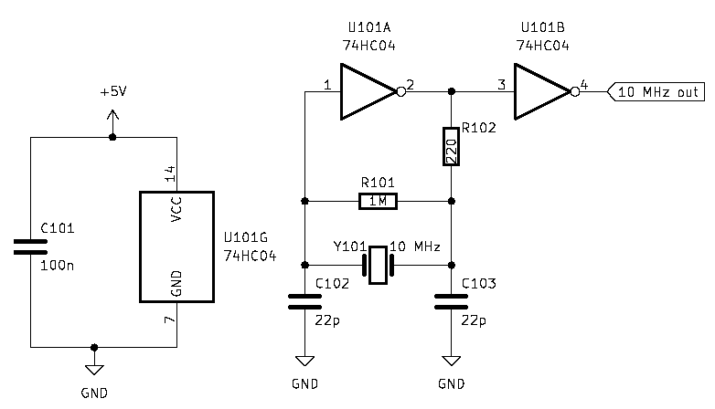
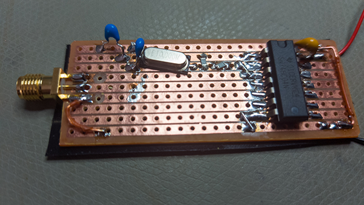
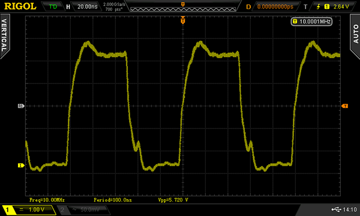
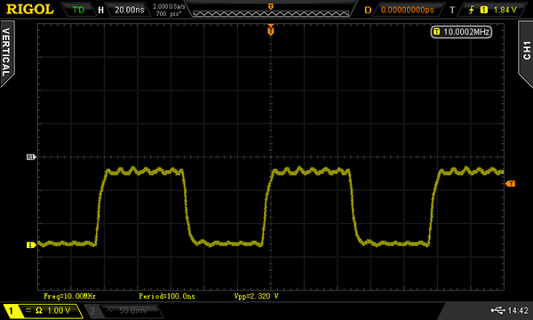

It should be possible to use an inverter to create a simple oscillator, and with a crystal it should be possible to set its frequency. This is a design that is everywhere:

I built this using stripboard:

Powering it from 5V, it does seem to work. The circuit draws a surprising amount of current: 40mA at 5V. Without any termination the waveform is not beautiful. Here is a screenshot from my oscilloscope:

I attempt to terminate it in 50 ohm at the scope end, and that cleans up the waveform somewhat. I’m also happy to see that it has the strength to power such a load:
